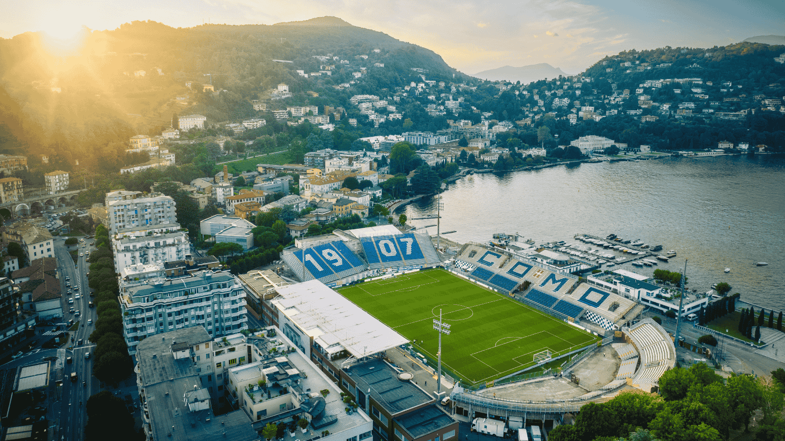

Treinador: Cesc Fàbregas
Cesc Fàbregas tornou-se um dos treinadores mais inovadores da Serie A . Após retirar-se como jogador no Como em 2023, assumiu o comando técnico do clube, evoluindo de adjunto a treinador principal com um projeto de longo prazo.
Estádio: Giuseppe Sinigaglia
O estádio Giuseppe Sinigaglia é a histórica e icónica casa do Como 1907. Destaca-se pela sua localização privilegiada junto ao Lago de Como, unindo a beleza natural da paisagem a uma atmosfera vibrante e moderna no coração do futebol italiano.

Estilo de Jogo:
O estilo de jogo de Cesc Fàbregas no Como 1907 é uma extensão direta da sua inteligência como jogador, um futebol cerebral, técnico e profundamente influenciado pela escola do Barcelona e pela verticalidade da Premier League.
"Semper Lucum!"